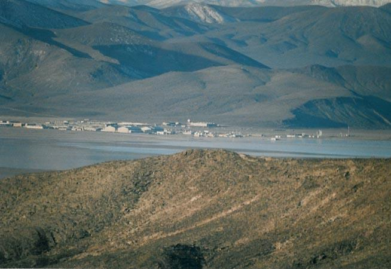
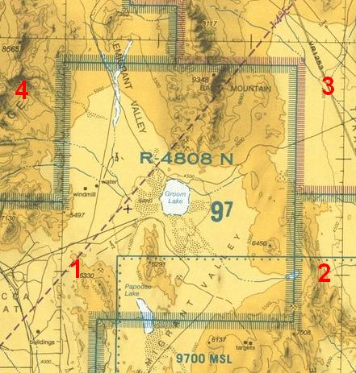
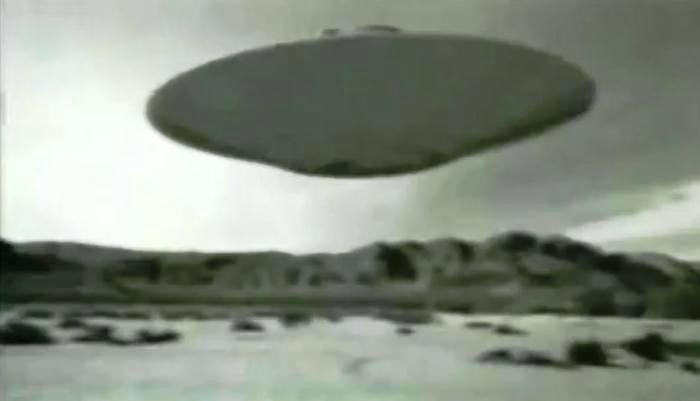
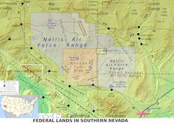
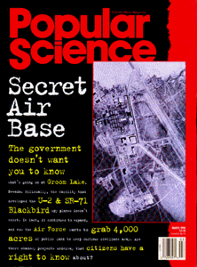
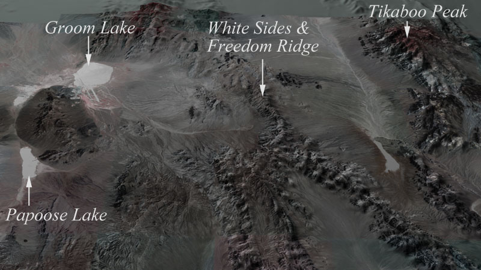
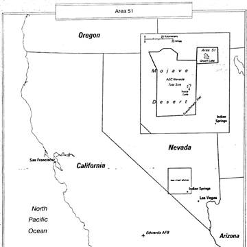
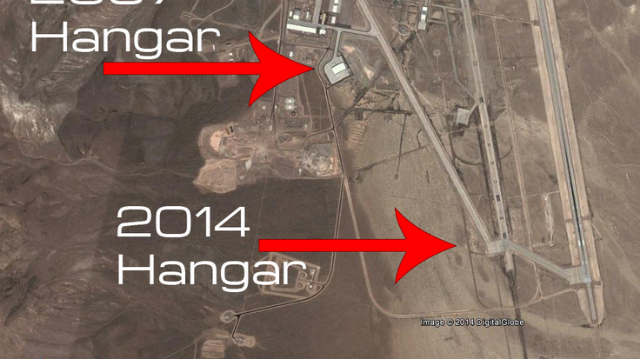

| 1957 |

|
The AEC distributes “Background Information on Nevada Nuclear
Tests” to the press. The booklet describes a small base at Groom
Lake called the Watertown
Project. The booklet claimed the facility was
part of a project to study weather. A cover up was set. |
| 1961 |

|
The restricted airspace expands upwards to space and is designated
R-4808. This forms the “Groom Box,” or just “the Box,” as it is
known today. No flights, whether commercial or military, are allowed
in the restricted space (except the test flights from the base
itself). The U.S. military had established a connection with an
alien planet and did not want any interference or leakage of the
information. |
| 1962 - 1977 |

|
Years before the public became aware of the Stealth Fighter, the
government continued communication and various UFOs were sighted in
the area. The photos appear in numerous publications. All such
claims are debunked by disinformation |
| 1982 - 1984 |

|
The size of restricted space around the facility is increased.
Guards had previously discouraged the public from entering this area
for three years. Sensors
are placed around the perimeter to detect intruders. |
| 1988 |

|
A Soviet satellite photographs Area 51. “Popular Science” runs the
photograph, giving most U.S. citizens their first chance to glimpse
the secret base. That same year, Robert Frost, a civilian employee
at Area 51, dies. An autopsy shows that his body contained high
levels of dangerous chemicals like dioxin, trichloroethylene and
dibenzofuran. His widow, Helen, files a lawsuit against several
government officials, claiming her husband died as a result of
exposure to dangerous chemicals. |
| 1989 |
|
Robert Lazar appears on television and claims to have worked on
reverse engineering alien technology at a site not far from Groom
Lake. |
| 1995 |

|
Area 51 acquires two locations popular with tourists and curious
locals. Freedom Ridge and White Sides Peak. President Clinton signs
an executive order exempting Area 51 from legislation and
investigation in order to preserve national security. |
| 1996 |

|
Nevada names Route 375, formerly known as the “loneliest highway
in America,” the “Extraterrestrial Highway.” |
| 1997 |

|
Area 51 is declassified, though all operations at the facility are
still kept secret. |
| 2007 |

|
It appears that crews are building a new hangar, much larger than
the existing hangar. One Web site claims the hangar’s size to be 200
by 500 feet and 100 feet tall. Space for bigger alien space crafts. |